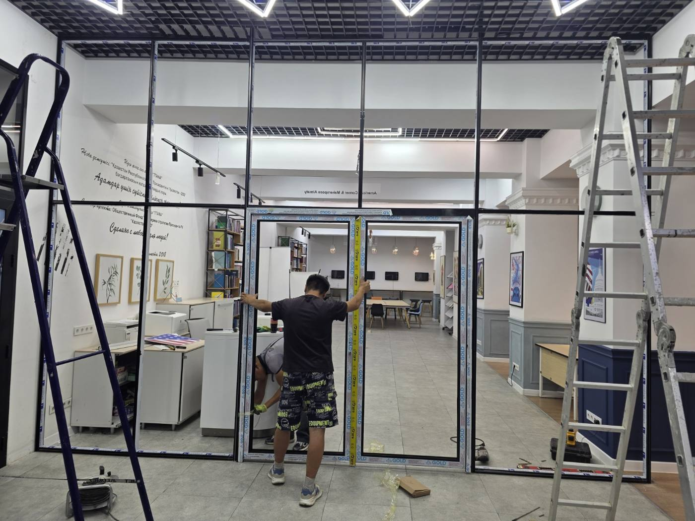
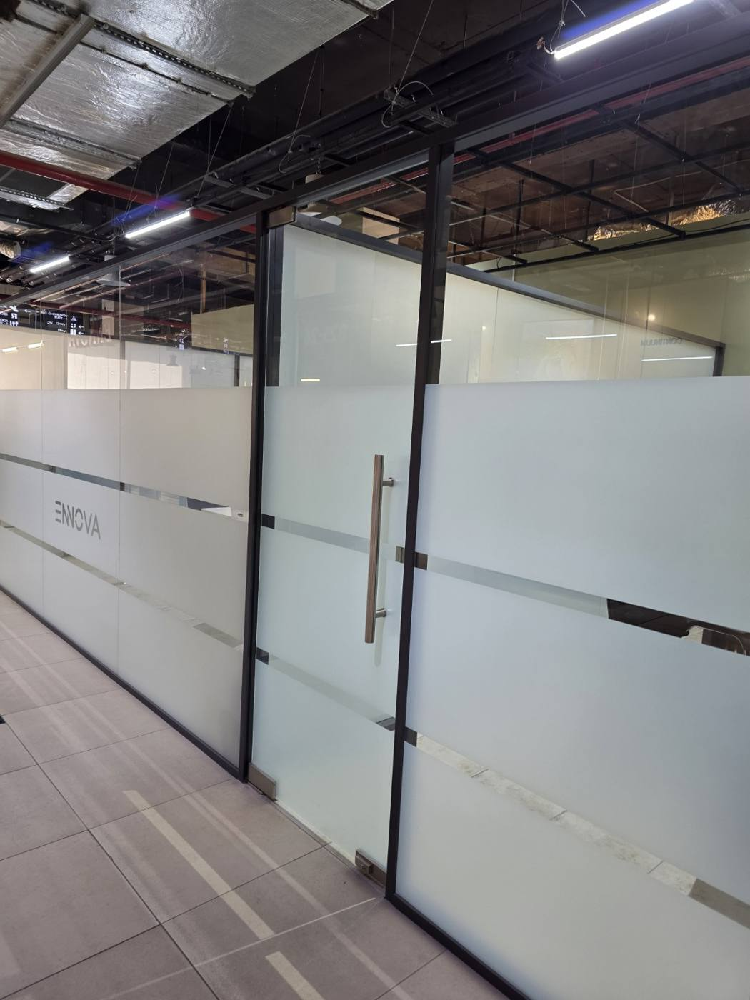
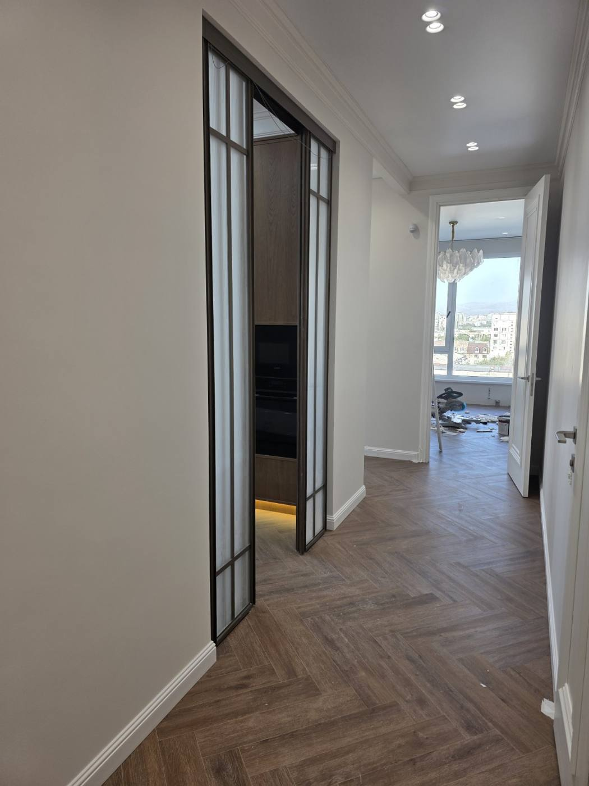
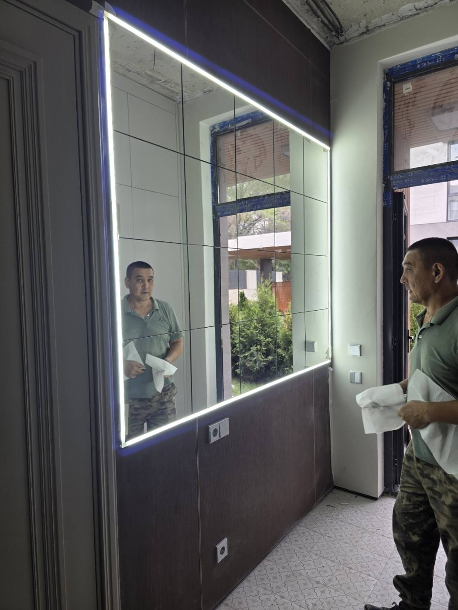
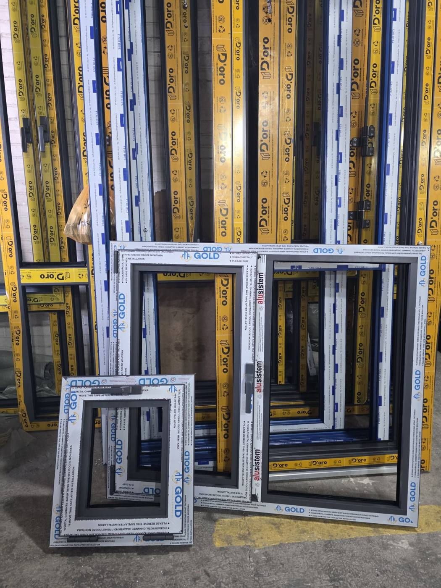
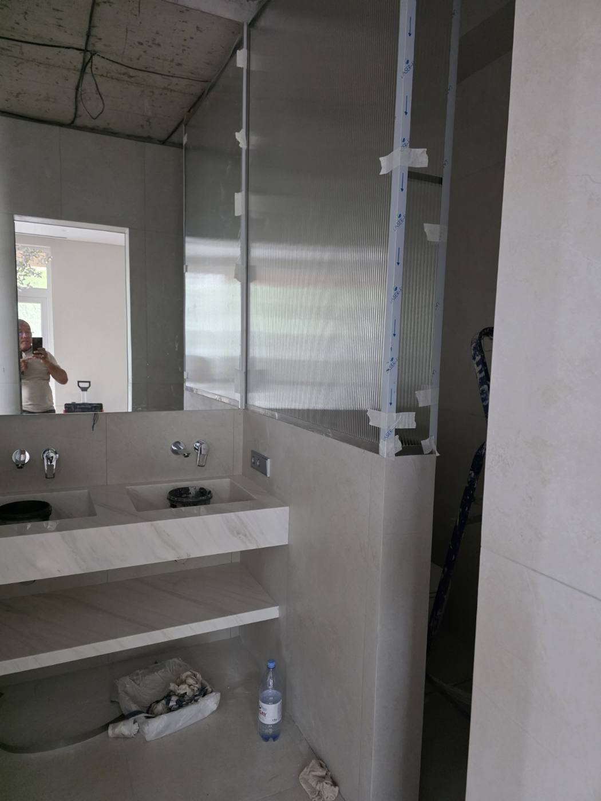

Офисные и стеклянные перегородки в Алматы
Изготавливаем и устанавливаем алюминиевые и стеклянные перегородки для офисов и коммерческих помещений. Подбираем решение под размеры и задачи объекта.
Запросить расчет в WhatsAppВарианты конструкций
- Алюминиевые офисные перегородки
- Цельностеклянные перегородки
- Перегородки с дверями
- Замер, изготовление и монтаж
Визуализация
Раздвижная стеклянная перегородка
Вариант угловой перегородки на примере кухни: одна конструкция с закрытой створкой и открытым проходом. Цвет профиля и размеры подбираем под ваш интерьер.


Изображения показывают вариант дизайна.
Примеры выполненных работ
Фото выполненных работ AINEK DESIGN






Как заказать
Отправьте размеры или проект — подготовим предложение.
Запросить расчет в WhatsApp